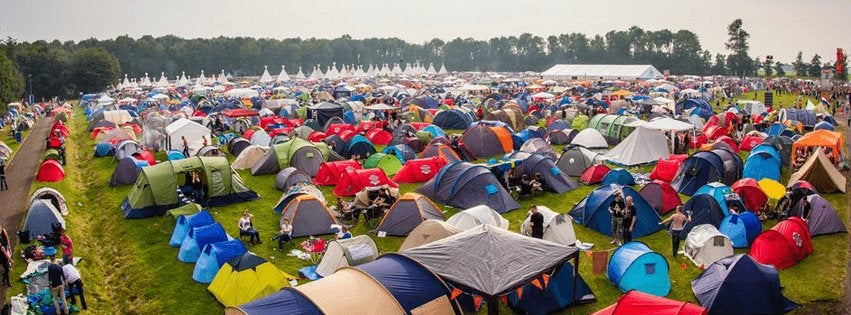

Noorderfeest Live

De eerste editie van het Noorderfeest Live gaat in januari van start.
Het wordt een unieke ervaring.
Een winterfestival met een indrukwekkende line-up.
Bekende artiesten uit binnen- en buitenland treden gedurende twee dagen op.
Je kan kaartjes boeken voor het hele weekend of voor 1 dag.
Zie het programma* voor de line-up.
Dit is je kans om alsnog een festival te bezoeken dit jaar.
Mis deze kans niet en bestel snel kaartjes**!

Naast het festivalterrein hebben we een kamperterrein voor bezoekers die twee dagen blijven. Je brengt je eigen tent mee. Als je een kaartje voor twee dagen boekt dan zijn de kosten voor het kamperen inbegrepen. Op het kampeerterrein gelden de volgende regels: